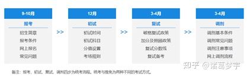
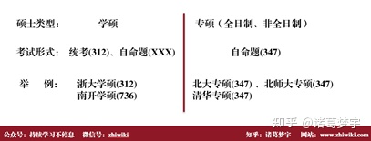
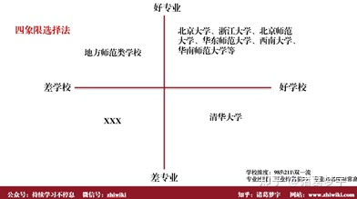
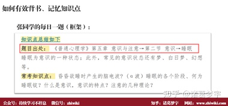
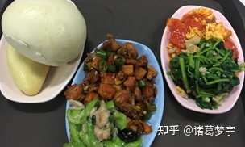
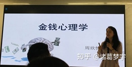
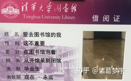

一、认知篇：想清楚你要做什么
二、就业篇：想清楚你读了能做什么
三、导师篇：想清楚你能选什么
四、备考篇：想清楚你能做什么
（一）院校选择篇：选择大于努力
（二）专业课备考：暴力破解学习
1.清华应用心理硕士备考
2.心理学312统考备考
3.公共课备考
（三）备考时间规划
（四）跨考生如何备考
（五）在职如何备考
五、备考方法篇
六、读研体验篇
七、清华应用心理专硕常见问题答疑
一、认知篇：想清楚你要做什么
心理学考研有许多难关，第一个便是想不明白为什么要考。考研到底是为了什么，以下是常见的报考理由，看看你属于哪一类：
当下就业难，硕士遍地是（一线城市），大厂门槛变高，想通过读研提高学历，在毕业后谋求更好的工作
单纯想提高学历，混个硕士学位
想继续深造，走科研之路，读博、出国
喜欢心理咨询，未来想从事这一行
对心理学本身感兴趣，苦于没有人带，想通过读研来深入学习
盲从随大流，看别人考研自己也要考，
不管你属于哪一个，在选择心理学考研之前，自己务必需要弄清楚是读研是为了什么。如果弄不出清楚，即使考上了，你依然会存在新问题：不知道读了为何，然后重新进入迷茫的怪圈。明确考研目的其实就明确了以后的职业方向，这里面涉及到职业规划的问题，再次不做展开，自己想清楚最好。【试一试】你考研的目的是什么？尝试用100字来描述清楚。
每年都有不少人来咨询我考研的事情，我第一个问题多半是问为什么考研，有的人表述很清楚，已经想好未来的路；有的人拿捏不准。对于想清楚的我会给予备考建议，对于拿捏不准的我一般建议再思量下，毕竟考研是个大事。
2020年全国硕士研究生报考人数341万人，这一数字比2019年度考研报名人数增长了50余万人，增幅超过17%，再创历史新高。2018年研究生报考人数达到238万，较2017年增加了37万人，增幅达18.4%。这一增幅在2019年再度被刷新。统计数据显示，2019年全国考研人数规模达到290万人，比2018年再增52万人，增幅升至21%。(数据来源研招网)
研招网
由以上报到可以看出，现在考研报考人数每年都在剧增，22年考研估计会更多，去年疫情导致一波人没有工作，这又导致一拨人进入22年的考研大军，考研的人乌泱泱，备考的人累慌慌。
如果你要考，思考下你为什么要读研？可以是兴趣驱动，可以是名校情结，可以是为了学历，可以是为了找个好工作或者是读博、出国、逃避工作等等。这些都可以，我认为以上的动机不是问题，最大的问题是，你是否坚定？动机有激发、维持和监督功能，多数人停留在激发阶段。一说要考北大清华，激动的不得了，然后就没有然后了。至于说以后的行动，基本没有。
我微信好友现在有400多个了，很多人过来说自己要考研，说完这句话就溜了，此后再也没有对话，不知道现在这些小伙伴去哪了？大家首先需要知道的是，考研是个周期长的活动，而且是个一锤子买卖，你能在多久的时间内维持自己考研的动机，基本决定了自己备考的效率。在《普通心理学》里不是有动机和效率的关系嘛，复习到的同学回去看看。没有动机哪来效率，哪来行动。所以常常问问自己为什么，把为什么写在一个能看到的地方或者时常说出来，总好过仅仅一次次激动的决定。
当年我第一次考浙大的时候，动机是极其强烈的，我已经规划好了我要走的路线，先考375+进入浙大复试，然后选择专硕，2年毕业后去阿里或者网易工作，留在杭州，巴拉巴拉。每天我都会用这条光明之路激励我，是这种的信念支撑我完成了考研复习，在145天内我每天早上5:40起床，去图书馆占十几个座位，英语政治专业课轮番复习，通过考研我在大四上学期自学完了心理学（对的，本科从来没好好听课，到了最后自学成才。还有心理学的很多科目都是可以自学的），虽然最后没考上，但是为以后打下了很好的基础。如果你要考，思考下自己为什么？理清自己的逻辑，建立动机、行动、思考体系，不要仅仅是一句，我要考研了事。
那，我为什么要考研、读研呢？
很简单，因为我没读过研究生，仅此而已，没有别的想法了。这是不是很单纯的想法呢？我认为是的。我既不是为了读博（从来没想要读，能力不足），也不是为了找个好工作（我不认为读研能找到好工作，眼界能不能提升另说，至少短时间内是实现不了的，还有可能倒退），从投资角度来看，无形资产的变现能力很差，有可能是个赔本买卖，加上时间成本、机会成本，读研的成本不知道就高到哪里去，心理学也不是一个有“钱途”的专业。最近在看《经济学原理》，很有意思的是，书中把教育当作一种消费，因为教育是一种服务，我们买到的是自然是一种商品喽，你们是怎么看的呢？【试一试】你是如何理解读研的？尝试用100字来描述清楚。
那，我为什么选择心理学考研？
这个问题更简单，因为我不了解别的专业，对其他专业也不感兴趣，在这个前提下，让我花时间跨专业考研，我认为是不值得的，还有我要上班，没有那么多时间复习，只能挑一个自己熟悉的、好考点的专业。
很多跨专业考心理学的同学说的最多的一句话是，我很感兴趣。最好把这个感兴趣量化，你是看了心理学书籍还是深入了解过心理学研究生的日常，还是仅仅为了读一个研究生而选择一个自认为感兴趣的专业。心理学不是用来感兴趣的，是要来进行学术训练、做科研、写文章的，一腔的感兴趣只会让你失望。所以在是否选择心理学或者是其他专业上，多去了解下研究生的生活，有机会去学校听听课，跟别人交流下，这个过程虽不能代替亲身经历，至少也比自己幻想好。还有，专业不存在好快、热门之说，你会发现，这都是别人给你植入的信念而已，并不是自己了解后得出的判断。我的建议是，多去跟已经上岸的人聊聊。他们生活是怎样的。多听听没坏处。我的考研目标是明确的，就是如何考到410分。然后分解到每个科目做规划，考到这个分数就可以了，多了不需要，低了也不行，实际结果是：刚刚好。
对于心理学初学者需要提醒的是：学习就如同战争，而且是一场攻坚战。有多少人能完成难题的攻坚，有多少人会因为各种原因而半途而废，还有多少人喜欢把学习二字挂在嘴边却无行动？你是不是也有类似的情况呢？其实很多人都是有学习心的，只不过有善始者实繁，能克终者盖寡。
为什么有时会觉得学习这么难——例如考研。多数人的理由是没有时间，小白不知道如何学习，没有人指导等等，这些问题几乎发生在我们每个人身上，我也不例外。我百思不得其解的是，为什么在没做之前就会感到难呢？ 是什么原因阻碍着我们的前行，我认为主要是以下几点原因：
1、初入新领域，对知识结构和基本概念不了解，因为不了解自己可能会胡思乱想，例如没学心理学的以为学心理的都有病，还能能知道别人的内心想法
2、对自己的不自信，表现在因为没有经验，所以害怕失败，不敢接受挑战
3、学习很大程度上要违背人性，克服对未知的恐惧，但是很多人是害怕的
4、没有多少时间，没精力，工作忙
5、还有其他很多原因
以上提到的，你也许有、也许没有。不过不要紧，学习这件事只是个动作，是个如何学的问题，最关键是先要搞清楚为什么学，然后去了解学什么。如果仅仅关注我要学习这几个字，会发现自己在一个死胡同里兜圈子：
我要学习—买书、买课—看不懂、没时间—放弃
明天我要好好学习—买书、买课—看不懂、没时间—放弃
下周一我要好好学习—买书、买课—看不懂、没时间—放弃
我其实也是有这样的经历的，直到自己考上研究生后，很多想法才发生了变化，但是从我接触到的考研学子来说，基本也是这个循环：
我要考研—买书、买课—考研太难、没时间、看不懂、来不及—放弃—明年再考—买书、买课—考研太难、没时间、看不懂、来不及—放弃—后年再考
学习为了改变，是为了不再当一条咸鱼，如果这辈子注定是咸鱼，而学习又不能让我变成更值钱的咸鱼，那真的可以老老实实呆着等着被炖。正因为学习确实可以改变自己，让自己的行为和认知发生积极变化，所以才走上学习折腾之路。
二、就业篇：想清楚你读了能做什么
心理学读研之后一般的有就业去向，下面结合我的经验来跟大家简单聊5块钱的。
1.进入考研辅导机构
这部分群体占比应该不少，你所见到的市面上已知的考研辅导机构很多都是读了研之后开始做这一行，即使没毕业的，也继续在学校里从事这一行。一般当主讲老师或者从事教研，主讲老师时薪会高点，也许等你考上，你也会从事的。
2.做心理咨询师
专门从事心理咨询，一是可以进去高校的心理咨询中心工作，二是可以在互联网平台开展心理咨询，例如简单心理目前是国内比较好的平台，以下是来自官网的截图，咨询师对自己的背景描述也比较清楚
3.心理测评类
去专业的测评机构开发测评问卷，例如开发人力测评问卷等，以下是北森官网发布的招聘说明，心理学专业榜上有名。
4.从事用户研究
一般互联网公司都有这种职位，例如阿里、小米等，想从事这方面的可以关注https://uxren.cn/，以下是小米集团有关用盐的招聘说明
5.脑与认知高级研究员
部分创业公司已经有类似的职位，好未来也有脑与认知实验室招聘，不过一般是博士学历。
以上仅仅是部分，其他如考公务员、做产品经理、进入中小学老师等都是常见的去向，其实不难发现，心理学的就业面已经很窄了，要么是从事本专业独有的工作，要么是跟大多数专业都一样选择考公、进高校等。心理学专业壁垒高的如心理咨询，脑认知等都需要投入大量时间和金钱来学习，所以总体而言，心理学不好就业。而且通过2-3年的研究生学习，结果其实未如你想象地那么好。现在大力发展专硕，学术硕士名额减少，使得考生只能选择专硕，专硕学习时间短，费用高，北京地区的高校基本都没有住宿，再加上现在大环境不乐观，岗位需求减少，硕士毕业后找工作也挺困难的，现在大厂校招要求都不低，更不用说社招了。当然，也不用灰心，读研还是能带来不少的收益，只不过涉及到职业规划，这一块就需要自己深思熟虑了。
三、导师篇：想清楚你能选什么
还没考进来之前，其实可以不用关注导师，考进来总归是有段时间让你熟悉的，提前联系未必是好事，这就像结婚一样，还没见到面就那么主动，你踩坑的可能性极高。
之前还有导师评价网可以看看老师的过往，现在缺少了这种途径只能靠旁敲侧击去搜集相关信息。机制使然，当我们撬动不了机制的时候，就需要我们自己多去搜索信息，现在互联网这么发达，总归是可以找到很多有效信息。选择适合自己的很重要，切莫因为一些不知所云的名词被迷惑，当不了解时，你入坑的概率就提升了。
国内有很多导师评价网，自己可以搜搜看。
四、备考篇：想清楚你能做什么
（一）考研、读研基本流程
1.考前备考：初试-笔试、复试-笔试+面试

2．读研期间：读文献、开组会、做实验、发问卷、写论文
3.毕业之后：涉及到职业规划问题
（二）院校选择篇：选择大于努力
- 1.综合选择法
首先是城市。建议去大城市，北上广等地区，学校资源丰富，学术交流活动多，市场前景好，机会多，选择多
其次是学校。考虑院校层次、招生人数、学费等因素
然后是专业。建议优先选择自己感兴趣、与本专业相关或者是为了职业发展的专业，切记仅仅因为感兴趣却不了解而瞎选
最后是职业发展。读研之后可以做什么，想做什么，自己多方查找资料，最好提前有思考
- 2.学费选择法
(1)学硕：8000元/年，学习年限3年
特点：学硕名额少，费用低，考试难、毕业难
(2)专硕：
全日制：人大（1.5万/年，学习年限3年）
非全日制：北师大(19.8万/人)、清华（9.8万/人）
特点：专硕名额多，费用高，非全无住宿

- 3.四象限选择法
依据自己的能力和报考院校的位置来选择， 以下供参考

（二）专业课备考：暴力破解学习
清华应用心理硕士备考
考研就像一场战役，兵马未动而粮草先行。这里的粮草就是考研信息，没见过哪个考上的研究生不去主动了解报考院校的信息的，多去网上搜一搜，你会发现很多的。针对清华大学应用心理硕士（非全日制）考研，结合别人写的经验，现总结以下备考书目：
1.普通心理学
《普通心理学》是本科心理学专业的必修课程，也是心理学考研必考内容，推荐参考书目是彭聃龄的《普通心理学》，本书内容涵盖了心理学最一般的知识，让你了解什么才是真正的心理学。下面就是这本书的封面。
2.社会心理学
《社会心理学》推荐侯玉波版的书籍，推荐这本主要原因是体系比较完整而且比较薄，对于考试来说足够了。而戴维·迈尔斯的《社会心理学》也不错，不过迈尔斯的书太厚了且不怎么适合备考。
3.管理心理学
推荐车丽萍的《管理心理学》，管理考察不多，建议重点放在普心和社会上
3.心理统计学
一般推荐参考书籍是张厚粲的《现代心理与教育统计》。我在这里再补充一本相对简单的统计书《心理与行为科学统计》，这本书更适合初学者。
4.实验心理学
郭秀艳的《实验心理学》对于初学者足够了，理解里面的概念和逻辑最为重要。额外推荐一本小书《改变心理学的40项研究》，可以挑选1-2个喜欢的实验重点记忆。
5.心理测量学
2019年考了问卷的编制，所以测量还是要好好看呀。把心理测量的两差四度，问卷编制，常模还有常见的量表等掌握，基本就够用了。
8.心理学研究方法，约翰·肖内西
9.心理咨询与心理治疗，钱铭怡
10.临床心理学
推荐胡佩城的《临床心理学》。本书主要是对心理咨询，心理治疗和临床心理学的基本概念做了介绍，比较适合初试。不建议大家直接看变态心理学和咨询心理学。先把这本《临床心理学》的知识点掌握即可。
最后补充两本，《这才是心理学》及《吾心可鉴》，还有可以到学堂在线听一听彭老师的《心理学概论》、《积极心理学》，平时多关注清华心理系的公众号，清华出题很热衷当下的热点。
2.心理学312统考备考
市面上有关统考的经验已经很多了，这里再补充基本参考资料，大家依需购买
3.公共课备考
这里没有太多建议，网上已经有很多了，建议报个小班跟着学习就行。
（三）备考时间规划
1、3-6月，基础学习，完成课本的框架搭建，不求记忆
2、7-9月，强化巩固，统考题、2000题等；做英语二真题
3、10-11月，专业课按照框架开始记忆；政治、英语学习
4、12月-考前，冲刺背书
复习重点：普心、社会、实验为核心，管理、统计、测量、咨询等为基本点
（四）跨考生如何备考
你以为你是跨考生就不如本专业？想一想你有没有好好学习本专业，心理学本专业的同样可能跟你学习本专业时的状态是一样的，存在那种学习好且认真的，但是也不少人在本科期间都是混日子，所以你不用担心，作为跨考生唯一需要关注的就是搜集报考信息，一切有关报考院校的信息都要去主动收集，减少信息差。
（五）在职如何备考
加班是阻碍你成功考的唯一障碍。
近年来的非全日制研究生，是不少在职人士考研的不二选择。研究生也一直扩招，不少人在初次失利后依然有考研的执念，所以毕业后继续备战，从二战、三战乃至四战的都有。前仆后继的众多，落榜失意的也不少，对于这样一波人，真的想问，你们准备好考研了嘛？
对于这样一波人来说，加班极有可能是阻碍考研成功的唯一障碍。为什么呢？
因为，加班意味着没有多少时间复习。而考研，恰恰最需要的就是大量时间。
考研能考上，无外乎几种情况。第一，学习能力超强，花1小时学习别人10小时的内容，属于超人级别，这种只在于考不考，不在于能不能考上；第二，多次考研，有丰富的考研经历，再来选择一个非全专硕，考试基本问题不大的，这种属于一流高手级别；第三，平时不加班，上班还能摸鱼，平时有大量时间来复习，最终也能考上，这种属于普通高手级别。
能考上的自然是高手，考不上的可能是时运不济抑或是没有好好复习。那些平时没时间复习，甚至考试都没时间去考试的人，考研比登天还难。
那能不能解决没时间想考研这个矛盾呢？
个人认为，不能。
没时间还考什么，要啥自行车。其实仔细一想就知道，考研是一个信息差相对较小的领域，复习参考书、真题等很多情况都能获取，在这些方面大家是一样的，而唯一使我们不一样的就是个人付出，例如复习时间，学习方法等。时间充裕的自然有优势，所以想着这么选个好考的学校，不如想着怎么挤时间出来才是王道。
如果是在加班严重的互联网公司，建议就不要报考了，不然你哪来的时间复习，或者辞职考研，不过不建议辞职。如果是时间宽裕的，可以平时上班摸摸鱼，下班复习，最后考上也不是大问题。
总说自己很忙、没时间的人，其实是浪费了太多时间。——大前研一《思考的技术》
想办法挤时间来学习才是解决的唯一方法，如果依然没有方法，建议放弃，好好工作吧。
六、备考方法篇
如果不能衡量，那就不能有效增长。
不管做什么事情，我们都想有一些指标来检测我们是否获得进步。例如国家级别的GDP、公司级别的KPI，还有个人的考试分数等。通过这些外显的方式，我们可以清晰的看到自己是进步了还是退步了，我们关注的焦点往往在今年GDP又增长了几个点，公司今年盈利又增长了几何，考试分数有没有提高等。如果不能增长，那等待我们的将是什么，你懂的。
当我们自我学习的时候，你知道如何衡量自己的学习效果吗？有以下三步作为参考：
1.分解目标，确立计划，用最小正周期来验证可行性。
最小正周期法：确定计划，在一周（适合自己的周期）内执行。通过一周的时间记录来回顾自己的学习情况。
“预则立，不预则废”，没有一个计划是不行的，注意这里的前提条件，如果你是纯小白，估计你会走很多路，不要紧，这都是该经历的，建议参考有经验的人士，不管对不对都去测试下，时间成本也不高，你说是不？举个例子：
考研这件事短期看是个应试行为，如果仅从拿到一个高分来说，我们可以采取功利学习法，只学习该学的，拿高分为主要目标。从长久看，就得好好学习这门课，搭建框架，形成自己的知识体系，最后能做研究，写文章等工作。
制定考研计划也可以分解。考研分三科，专业课、英语、政治，每门课分数占比是多少，心中要有数。根据分数进行时间分配，每门考试又分为很多项目，然后再细分。比如说英语要考75分（目标分数），每个项目有把握的分数是，完形7分，阅读拿30分，新题型6分，翻译6分，写作 20分，这样一算还差6分，不要紧。看看这些项目，哪些容易提分优先重点打击，政治和专业课也是如此。剩下的就是时间分配的问题，
时间分配是影响学习效果的一个重要因素，如果时间上分配不足，很难想象你是怎么学好的。但是不要以为绝对时间长就学习有效，人毕竟不是机器，总有累的时候，当学习时间长但效率低的时候，学习效果难以保证。很多考研的孩子看到别人一天学10多个小时就慌了。其实没必要。建议参考别人的经验来，自己制定一个计划，用一周到两周时间去执行，看看效果。
补充一句，其实考研方法是很简单的，基本原则是重执行，轻名头。不要在意谁说的，某某名师、某某高人，其实无所谓的，先自己去尝试、验证下即可，小马过河，深浅自知。以下是我社群里学员每日学习的截图，已经不是一天两天了，你觉得你跟他们有多大的差距呢？
2.每日、每周记录时间花费（也可用于记账）
时间记录法：每天记录自己的学习、工作时间，最好是记整点，只记录对自我有成长意义的事情。这种方法的好处是，知道自己每天都在干嘛。互联网的发展让人浮躁，对时间的感知也低了很多，一条到晚刷刷刷。
时间记录能从时间上看出自己在哪些方面投入过多，哪些投入过少。有了对时间的把控，再去调整自己的学习就有对策了。
3、反向输出
每天学习的内容，睡前默写，看看今天掌握程度，如有遗忘，立刻拿出书来看一看，实在记不住，明天继续
以下备考相关的关键步骤，供大家参考：


五、读研体验篇
回想当初决定考清华的时候，那时我还是一个小白，对于考研及读研其实没有多大的概念。尽管曾经考过统考，也设想过读研后的美妙生活，但是一切来得太快，也措不及防。读研之后才发现，自己想的和真实的还是有不少差距。但是自己想要考上的执念一直存在。我想很多人都有这种执念吧。想法虽好，但是要有坚定的信念。我发现，每年进入复试的名单里都有老熟人，这些人坚持1-2年果真考上了，所以如果你真的特别想考，那就去考吧。
进入学校前，先弄一份地图，不然会迷路。（当初我考研前来踩点，迷路了2次）。学校地图，每年都会有更新，这是官网链接https://www.tsinghua.edu.cn/zjqh/xyfg/xydt1.htm
下面我将从学习科研、饮食、运动等几个方面简单展开。
一、学习
既然已经考上研究生，那么对于研究生的第一要务就是学习。
总体上，研究生的课程安排是挺紧凑的，主要集中在周末，对于在职读研的同学已经是比较友好了。如果身处在加班如便饭的公司，你就得考虑下自己毕业问题了。课程分为必修和选修，必修部分除了高级心理统计对于大家来说会难一些，其他的基本没问题。
平时一定要积极读文献，这将是你毕业论文的开始，平时不努力，毕业两行泪。总是，多读文献就是了，最开始我也是两眼一抹黑，后来才逐渐有了一点认识，关于如何查阅文献、读文献，可以去收集一波资料，这是课程之外的必修课。
对了，清华特别大，如果想要走遍全学校，估计要1-2个小时。所以建议买个自行车或者电驴（记得买新国标），或者乘坐校车，就是右下角的紫色的大家伙(我一次也没做过，有点遗憾)。
科研方面，对于专硕的同学来说，尽早确定自己的研究方向，然后选择适合自己的导师最为重要，其次确定自己的毕业研究方向，2年的时间很快，所以能早则早，还是之前说的，如果经常加班，2年内毕业是很困难的，所以报考前最好思考下自己多久能毕业。导师的选择不必着急，入学后会有一堂课，每位老师都会讲自己的研究方向及招生要求，建议在听完老师们的课后再选择也不迟。
二、饮食
清华食堂有点多，建议入学后可以规划下，天天不重样估计也能吃一个月。我常去的有清芬园、紫荆园、桃李园、听涛园、丁香园、观畴园，菜品丰富且价格低廉，还有清华酸奶、酸梅汤等冷饮也不错。早饭最爱吃的酱肉包和豆腐脑，已经好久不吃了，馋~

三、运动
陈明游泳馆真是香。迄今为止，我也学会了如何优雅的漂。游泳已经相当便宜了，刷校园卡只要7块，买一张150次的票平均一次也就5块，对于想去学习游泳的可以尝试下。其他运动例如羽毛球、网球等都有独立场馆，不过一般需要预约。
清华的运动风很浓厚，每年毕业还会有毕业长跑。下图是去年毕业长跑，跑完发一个奖牌的，很拉风。
四、其他
1、听讲座，这里有商业大佬，图灵奖获得者的讲座，感兴趣的可以听一听，很多都是全英文的，听的我一脸懵逼
2、心理学讲座
心理学讲座也挺多的，通常都会在伟清楼或者HLab里，建议关注清华大学心理学系的公众号，讲座推送非常频繁

3、读书
图书馆是我最爱去的地方，文科馆和北馆各有千秋，但是平时图书馆到10-11点就没位置了，所以想去学习的尽早去占位。

4、著名建筑
二校门不用说，这里可以看看清华学堂。一般人还真进不去。这里还有清华姚班的上课地点，也是《无问西东》的上课的那个地方。
七、清华应用心理专硕常见问题答疑
1.要不要辞职考研？
答：可以考虑，不过不建议辞职，除非有矿，主要原因是性价比较低，投入大，产出不一定大。
2.是不是只能在职才能考呀？应届生不能考呀？
答：是的，应届生无法报考，必须本科毕业在入学前满2年可以报考，其他具体条件见招生简章。
3.请问清华MAP如何授课？是每月集中授课一次，还是每个周末上课？
答：每周末上课，一次2天，研一基本会把所有课程上完。
4.非全可以读博吗？
答：非全也可以读博，如有硕士期间有问题再好不过。
5.对于非全的认识。
目前整体上对于非全的社会认可度较低，但是非全专硕也是趋势，未来的认可度会提高的。